前庭系統定位：中樞 vs 周邊、矛盾性前庭症候群、Horner 路徑
官方題目：顛倒的世界：前庭疾病的診斷與挑戰——前庭疾病定位與處置的臨床導航圖
主講：洪亘屏（S. Hong）｜2026 年 11 月 1 日 09:00–10:30｜FASAVA 2026 F 廳（全英文）｜場次 01
現場照片約 55 張＋錄音。錄音從 09:26 開始（約 75 分鐘），前 26 分鐘（內耳與小腦解剖）沒有錄到，從小腦的本體感覺缺損講起。逐字稿是語音辨識，病名藥名常聽錯，已依上下文更正，不確定處以 ❔ 標示。標 💡 的是整理者依教科書補充的內容。
⭐ 必記原則
- 有本體感覺缺損、輕癱、小腦症狀：想到中樞前庭
- 一般前庭病灶：頭傾斜、身體傾倒朝向病灶側
- 例外是矛盾性前庭症候群：頭傾斜遠離病灶
- 矛盾性的病灶在小葉小結葉或後小腦腳（CCP）
- 矛盾性時，本體感覺缺損在病灶同側：用它來定位，不要看頭歪哪邊
- 休息時眼球震顫 >66 次／分 偏向周邊（敏感度 85%、特異度 95%）
- NE 定位在周邊的狗，約 1/4 MRI 有中樞病灶：周邊定位不能排除中樞
- 遮一眼、另一眼用筆燈照：眼球震顫變明顯支持周邊（周邊 7/21，中樞 1/16）
- 用發病與進展對照病程曲線排鑑別診斷：持續惡化想腫瘤
- 中耳炎可延伸成耳源性腦膜腦炎；常伴 CN VII、Horner，常留頭傾斜
- 法鬥：耳咽管引流差，容易有無症狀中耳積液 → 耳源性腦膜炎；NE 定位常不準
- 貓耳源性顱內感染：63% 沒耳病史、47% 耳鏡正常；常見 Pasteurella
- 手術（VBO／TECA-LBO）＋抗生素預後最好；經驗用藥 Clavamox ＋ clindamycin
- 特發性前庭疾病：老年、急性、沒有 Horner、1–2 週自行改善（但約一半會殘留症狀）
- 中樞：急性不進展想血管性，進展想腫瘤，慢性想發炎；飲食史別漏掉硫胺素缺乏
- 中風：老年、急性不進展、會改善；狗最常在小腦（45%）；一定要找潛在疾病（腎病、庫欣、甲狀腺低下）並量血壓
- Horner：瞳孔縮小、眼瞼下垂、眼球內陷、第三眼瞼突出
- Horner 是三段神經元：下視丘 → T1–T3 → 前頸神經節 → 眼
- 節後纖維會經過中耳：中耳炎可同時造成前庭症狀和 Horner
場次資訊
▾- 官方題目：顛倒的世界：前庭疾病的診斷與挑戰——前庭疾病定位與處置的臨床導航圖。
- 講者：洪亘屏（S. Hong）；2026-11-01 09:00–10:30，F 廳，全英文授課。同一位講者接著講 02 全身無力與下運動神經元疾病。
- 投影片順序依拍攝順序整理，實際上課順序可能不同。
- 🎤 從錄音推測講者的背景：在美國東北部的教學醫院（提到 Cornell 的抗生素管理、「我們臨床服務有四位老師」、「搬到東北部之後才第一次看到」），碩士在台大念的。
- 🎤 講者最重視的順序：先問完基本資料和病史，再碰狗。病史要問：何時開始、發病快慢、進展、在原獸醫那裡對什麼治療有反應、旅遊史、同住動物有沒有類似病例。用 DAMNIT-V 確保沒漏掉哪一類。
📸 現場 神經（前庭）病患的看診流程

| 1. 基本資料 | 2. 病史 | 3. 神經學檢查／定位 |
|---|---|---|
| 品種、年齡、性別 | 症狀何時開始（發病）？ 進展如何？ 做過哪些檢查或治療？ 改善還是惡化？ 其他：旅遊史、家族史 |
腦：周邊還是中樞前庭 |
1. 中樞 vs 周邊前庭：步態與姿勢
▾📸 現場 Clinical Signs – Gait/Posture

中樞前庭系統（投影片列出的症狀）
- 前庭性運動失調（vestibular ataxia）
- 小腦性運動失調（cerebellar ataxia）：步幅過大（hypermetria）、意向性震顫（intention tremor）
- 本體感覺性運動失調（proprioceptive ataxia）
- 四肢輕癱或半側輕癱（tetra/hemiparesis）
- 身體傾倒、頭傾斜朝向病灶，投影片加了 *，指的就是第 3 節的例外：矛盾性前庭症候群
💡 周邊那一側是現場影片，照片看不出內容。一般的對照如下：
| 症狀 | 周邊（內耳、CN VIII） | 中樞（腦幹前庭核、小腦） |
|---|---|---|
| 頭傾斜 | 朝向病灶 | 多半朝向病灶；矛盾性則遠離病灶 |
| 本體感覺缺損、輕癱 | 沒有 | 常有（病灶同側） |
| 意識 | 正常（可能因暈眩而不安） | 可能沉鬱、昏睡 |
| 病理性眼球震顫 | 水平或旋轉，快相遠離病灶，不隨頭位改變方向 | 可以是任何方向，包括垂直；可能隨頭位改變方向 |
| 其他腦神經 | 可能有 CN VII 麻痺、Horner（中耳炎） | 可能有 CN V–XII 多條腦神經缺損 |
- 🎤 意識是第一眼就要看的：周邊前庭可以迷失方向，但不應該到昏睡（stupor）或木僵；意識明顯下降要想中樞。
- 前庭性運動失調（繞圈、往一側倒）中樞和周邊都會有，分不出來。
- 本體感覺性運動失調／輕癱：本體感覺徑路走在腦幹，不經過周邊前庭系統，所以有本體感覺缺損或輕癱就是中樞。講者的影片：走廊上看到前庭性運動失調、往一側倒，但也無力，前肢不對稱像在踏步（小腦也參與），倒下時有點指背著地 → 前庭＋小腦＋本體感覺性運動失調合併四肢輕癱，光看走路就知道是中樞。
- 單純小腦病灶通常不太造成無力，例外是小葉小結葉和後小腦腳（CCP）。
- 多條腦神經（CN VI–XII 都在延腦附近，CN VIII 在中間）同時受影響 → 中樞。但 CN VII 出來的位置很靠近 CN VIII，只有 CN VII ＋ Horner 仍可能是周邊（中耳）。
- 眼球震顫的方向通常是快相遠離病灶。一般教「中樞可以水平、垂直、會變；周邊多是水平或旋轉」，垂直就放中樞，講者大多同意；但其實兩者幾乎什麼型態都可能出現，只能當軟性證據：跟其他發現吻合很好，不吻合也沒關係。
2. 研究：神經學檢查定位有多準
▾📸 現場 Troxel 2005：中樞 vs 周邊前庭疾病的神經學症狀

- 中樞前庭疾病（CVD）20 隻 vs 周邊前庭疾病（PVD）20 隻狗。
- 中樞：比較可能無法行走（non-ambulatory，表中紅框的四肢輕癱）。
- 周邊：
- 比較可能往一個方向傾倒或偏走（lean/veer）。
- 比較可能有休息時眼球震顫（resting nystagmus）。
- 休息時眼球震顫 > 66 次／分：診斷周邊的敏感度 85%、特異度 95%。
💡 實用做法：看到眼球震顫時數 15 秒再乘 4。很快（>66 次／分）偏向周邊；慢的或沒有休息時眼球震顫，加上無法行走，要提高中樞的懷疑。
- 🎤 講者說她自己從來沒有真的數過眼球震顫幾下；頭傾斜的嚴重程度和斜視都分不出中樞或周邊。
📸 現場 Bongartz 2020：神經學檢查定位 vs MRI

- 回溯性研究，德國 2 家醫院，93 隻狗，依神經學檢查（NE）分組：中樞 62 隻、周邊 31 隻。
- 中樞：62 隻中 61 隻定位正確。
- 周邊：31 隻中 7 隻（約 23%）MRI 上其實有中樞病灶。
- 投影片結論："Localization: Peripheral >>> Central — But cannot rule out central…"
- 🎤 7 隻「以為是周邊」的狗，MRI 上其實是腦膜炎、腫瘤等中樞病灶。
- 講者受訓時老師教的：只要說「周邊定位」，一定要加但書：「比較像周邊，但不能排除中樞。」飼主想做影像就支持，因為我們有時候沒那麼準，漏掉會延誤診斷。
📸 現場 改良式筆燈遮眼試驗（Modified Penlight-Cover Test）

- 前瞻性研究，客戶的狗和貓。
- 假說：去除視覺輸入可以幫助周邊定位，因為視覺固視會抑制周邊前庭疾病的眼球震顫，但不會抑制中樞的。
- 周邊 21 隻、中樞 16 隻；做法是一眼遮住，另一眼用筆燈直照（讓動物無法固視）。
- 比較眼球震顫的頻率（beat frequency，BF）和主觀的慢相速度（slow phase velocity，SPV）。
- 結果：
- 周邊：BF 上升 33%（7/21），SPV 上升 24%。
- 中樞：BF 上升只有 1/16，SPV 上升 0/16。
- 特發性前庭疾病：BF 上升 2/10。
- 1 隻周邊病例原本沒有眼球震顫，遮眼加筆燈後才出現。
- 🎤 原理：動物注視目標時，會抑制周邊前庭疾病的眼球震顫，但不抑制中樞的。動物沒辦法聽指令「不要看」，所以用遮一眼、另一眼照筆燈來移除視覺輸入。
- 結果：周邊定位的狗 33% 眼球震顫頻率增加，中樞只有 1 隻；其中有狗原本看不到眼球震顫，做了試驗才出現。
- 講者自己還沒用過，是準備演講時讀到的新研究；建議可以用來提高周邊定位的信心。
3. 矛盾性前庭症候群（Paradoxical Vestibular Syndrome）
▾📸 現場 病灶位置與前庭脊髓徑

- 小腦病灶：小葉小結葉（flocculonodular lobe）與後小腦腳（caudal cerebellar peduncle，CCP）。
- 前庭系統負責身體姿勢，又回到傳導徑（"the tracts again!"）：
- 外側前庭脊髓徑（lateral vestibulospinal tract）→ 整條脊髓（投影片寫：想成頸部、肩部）
- 內側前庭脊髓徑（medial vestibulospinal tract）→ 頸髓與前胸髓（投影片寫：想成軀幹、四肢）
- 神經學檢查（NE）：本體感覺缺損在病灶同側（ipsilateral proprioception deficits）。
📸 現場 迴路圖：以左側小腦病灶為例

圖上的結構，左右兩邊對稱：
- CN VIII（前庭神經）→ 內側／外側前庭核 → 往下到同側脊髓與頭部（LEFT SIDE SC & HEAD／RIGHT SIDE SC & HEAD）。
- 小葉小結葉經 CCP（虛線，抑制性）回到同側前庭核。
💡 機轉（以左側病灶為例）：
- 正常時，小葉小結葉經 CCP 抑制同側前庭核。
- 左側小葉小結葉或左 CCP 壞掉 → 左側前庭核失去抑制，活性比右側高。
- 大腦把「左邊訊號比較強」解讀成身體往右倒，於是代償往左撐；結果頭傾斜、身體傾倒朝向右邊，也就是遠離病灶。這和一般前庭病灶（訊號減弱的一側＝病灶側＝頭歪的一側）剛好相反。
- 但小腦和腦幹的本體感覺路徑受損仍在左側，所以本體感覺缺損、輕癱出現在左邊。
💡 常見病因：後顱窩腫瘤（如脈絡叢腫瘤、腦膜瘤）、腦梗塞、肉芽腫性腦膜腦炎（GME）、甲硝唑（metronidazole）中毒等。
- 🎤 講者老師的比喻：左右兩邊前庭核各有 5 份興奮性輸入，小葉小結葉經 CCP 給等量的抑制，兩邊抵消所以平衡。
- 左側小葉小結葉壞掉 → 失去的是抑制不是興奮 → 左側變成 9–10 份 → 頭反而歪向右邊（遠離病灶），這就是「矛盾」（不同側）。
- 有些本體感覺徑路經過小葉小結葉／CCP，所以本體感覺缺損在左側（同側）。看到這個組合就能非常精準地定位。
📸 現場 Villalonga 2026：小腦病灶位置與臨床表現

- 回溯性、多家轉診中心；102 隻有小腦疾病、做過神經學檢查和 MRI 的狗。
- 問題：臨床症狀能不能對應到小腦的哪一區，以及疾病種類和鑑別診斷？
- 結果：
- 血管性病灶 47 隻中，42 隻在前小腦動脈（rostral cerebellar artery）分布區，5 隻在後小腦動脈區。
- 前葉（rostral lobe）：小腦性運動失調（山頂 culmen）；去小腦姿勢（decerebellate，中央小葉 LC）。
- 後葉（caudal lobe）：行為異常；病理性眼球震顫（蚓葉 FV、蚓結節 TV）。
- 深部白質病灶：前庭症候群；矛盾性前庭症候群。
💡 「42/47 Rostral Cerebellar A」是依投影片右上表（血管性 n=47）推測為前小腦動脈，之後對照原文確認。FV、TV、LC 的縮寫也是整理者依小腦分區圖推測。
- 🎤 講者只當「神經解剖的有趣對照」帶過：前葉 → 小腦性運動失調；後葉 → 奇怪的行為、病理性眼球震顫；深部白質 → 矛盾性前庭。
4. 病例 Jack（矛盾性前庭）
▾📸 現場 病史

- Jack，7 歲已去勢公犬，獵犬（Hound）。
- 7/12 第一次發作：從樓梯跌下、站不穩，短暫出現頭往後仰。
- 7 月中下旬到急診（日期被麥克風擋住）：沒有改善，發現眼球震顫。
- 7/28 神經科評估：前庭症狀持續惡化。
💡 「進行性惡化」是重點：特發性前庭疾病通常幾天內開始改善，持續惡化要往中樞、腫瘤方向想（見第 5 節的病程曲線）。
📸 現場 神經學定位與鑑別診斷

- 神經學定位：腦，局部 ± 多發。
- 右側小腦（矛盾性） ± 前腦。
- 鑑別診斷：腫瘤 >>>> 血管性或發炎。
- 🎤 現場先只給「7 歲已去勢公獵犬，兩週進行性失去平衡」，讓台下定位與列鑑別；多數人答右小腦、少數答周邊前庭。
- 影片：頭向左傾斜；右前肢步幅過大（overreaching），朝鏡頭走過來時更明顯 → 右側小腦、矛盾性前庭（和第 3 節規則吻合：頭歪向對側，小腦症狀在病灶側）。
- 講者的技巧：讓狗在走廊上不牽繩、沒有人碰自己走，牠們比較會表現出真正的樣子。
- 補充病史：一開始從樓梯跌下後站不穩，急診看到眼球震顫，之後沒有改善反而惡化，才轉神經科。7 歲＋單側小腦步態 → 腫瘤排最前面（台下也有人答 GBM、中風）。
📸 現場 影像與暫定診斷

- 做了腦部 MRI ＋ 腦脊髓液（CSF）＋ CT（CT 是為了放射治療規劃）。
- 暫定診斷：腦膜瘤，其次是圓形細胞腫瘤（淋巴瘤 > 組織球肉瘤），或其他。
- 🎤 講者「驚訝但也不驚訝」：狗還走得那麼好、意識那麼清楚，MRI 上右側小腦幾乎被一顆大腫塊取代。
- 依 MRI 和 CSF：最可能是腦膜瘤，其次是圓形細胞腫瘤、組織球肉瘤（逐字稿聽成 rheosyndetic sarcoma ❔）。
- 治療：放射治療（錄音沒有講後續結果）。
5. 周邊前庭疾病：鑑別診斷與耳源性感染
▾📸 現場 鑑別診斷：急性 vs 慢性

急性（ACUTE）
- 代謝（Metabolic）
- 營養／腫瘤
- 感染／發炎／梗塞
- 毒素／外傷
慢性（CHRONIC）
- 退化（Degenerative）
- 先天異常（Anomaly）
投影片右下是「症狀嚴重度 vs 時間」的病程曲線：
| 疾病類別 | 病程曲線 |
|---|---|
| 梗塞、外傷 | 一開始最嚴重，之後逐漸改善 |
| 發炎 | 上升一段時間後下降 |
| 中毒 | 持續上升（隨暴露累積） |
| 先天異常 | 平的，症狀穩定不變 |
| 退化、腫瘤 | 慢慢、持續惡化 |
| 代謝 | 起伏（waxing and waning） |
💡 用病史的「發病與進展」對照這張曲線，就能把鑑別診斷排出優先順序。例如 Jack 是慢慢惡化 → 腫瘤排第一。
- 🎤 病程曲線適用每一個神經病例：先天代謝異常可能急性惡化；發炎性會起伏；中毒是吃越多越糟、持續暴露就持續惡化；先天異常通常維持不變；退化性和腫瘤越來越糟；代謝性「想怎樣就怎樣」，常起伏。
- 投影片上那隻跌倒的小豬：其實是嚴重水腦壓迫前腦與腦幹。
📸 現場 周邊前庭疾病的鑑別診斷（DAMNIT）

| DAMNIT 類別 | 疾病 |
|---|---|
| 先天異常 | 先天性前庭疾病 |
| 代謝 | 甲狀腺功能低下 |
| 腫瘤 | 耳部腫瘤、周邊神經鞘瘤（PNST） |
| 感染／發炎 | 內耳炎／中耳炎、息肉 |
| 外傷 | 創傷性腦傷 |
| 中毒 | 耳毒性藥物 |
| 特發性 | 特發性！ |
💡 息肉以貓為主（鼻咽息肉）；耳毒性常見的是 aminoglycoside、耳道內使用 chlorhexidine。
- 🎤 周邊最常見的是中耳／內耳炎、外傷、中毒、特發性。講者的處理順序：先判斷急性進展、急性不進展或慢性 → 基本血檢和身體檢查 → 配合的話做耳鏡（鎮靜下，或乖的話不用）± 培養 → 外傷、中毒通常靠病史（「前幾天洗耳朵」「吃了 ABC」「被車撞」）。
- 中耳／內耳炎：X 光、CT、MRI 都可以；飼主不做影像時也可以依耳鏡（膿瘍、息肉）做有根據的猜測開始內科或外科治療。其他都排除後才能說是特發性。
📸 現場 內耳炎／中耳炎（Otitis interna/media）

- 可能由外耳炎延伸而來。
- 可能再往中樞延伸，造成耳源性腦膜腦炎（otogenic meningoencephalitis）。
- 可能伴隨 CN VII（顏面神經）症狀、Horner（呼應第 7 節：節後纖維經過中耳）。
- 治療：內科（抗生素、抗發炎藥）；外科。
- 預後：常留下殘留的頭傾斜。
- 🎤 講者覺得現在中耳／內耳炎多很多：住院醫師時期不常見，現在每個月至少一兩隻、各種品種。
- 可以從周邊往中樞延伸（耳源性顱內感染）；也可合併顏面神經麻痺或 Horner。
- CT 範例：右側鼓室泡沒有空氣，充滿物質，外耳道到內耳道都有。
- 治療：抗生素＋抗發炎，或進去沖洗、清乾淨。預後通常很好，但可能留下頭傾斜。
📸 現場 病例：法國鬥牛犬（耳源性腦膜炎）

神經學檢查
- 右眼（OD）威嚇反應沒有眨眼；左眼（OS）眼瞼反射正常，右眼眼瞼反射消失。
- 瞳孔不等大：右眼縮小，左眼相對放大。
- 休息時有水平＋旋轉的眼球震顫，快相向左、順時針；頭往背側抬時仍存在，速度會間歇性突然加快。
- 右半臉沒有顏面運動，右側嘴唇輕微下垂。
MRI 結果

- 序列：T1 矢狀、T1 橫切、T1 顯影後橫切、T2 矢狀、T2 橫切、FLAIR 橫切（箭頭標出病灶）。
- 診斷：耳源性感染性腦膜炎，周圍組織有明顯發炎。
• 右眼不眨眼是顏面神經（CN VII）出問題，不是看不見：威嚇反應和眼瞼反射都需要 CN VII 閉眼。
• 右眼瞳孔縮小＝右側 Horner。
• 快相向左＝遠離右側病灶，符合右側周邊。
• CN VII ＋ Horner ＋ 前庭三者同側，指向右側中耳／內耳。
這隻狗神經學檢查看起來是周邊，MRI 卻已經延伸到腦膜，正好呼應第 2 節 Bongartz 的結論：周邊定位不能排除中樞。
- 🎤 2 歲法鬥，急性前庭症狀；有過敏性外耳炎病史（「法鬥當然皮膚耳朵都不好」，飼主不意外），原獸醫用類固醇治療。
- 急診檢查：輕度前庭性運動失調、偶爾偏走絆倒、向右繞圈；意識還算清楚、對外界有反應。
- 右側眼瞼反射消失（CN VII），左側正常；右側 Horner（右側瞳孔縮小，造成兩側瞳孔不等）。
- 定位：右側周邊前庭＋右側顏面神經，沒有本體感覺缺損 →「看起來是周邊」。講者說要不要掃由飼主決定，但這隻還是進了 MRI，最懷疑的是耳源性顱內感染（所以才沒改善）。
- MRI：兩側鼓室泡都有變化、右側較明顯；右側有腦膜顯影，T2 和 FLAIR 更清楚（FLAIR 上應該變黑的液體沒有變黑）；鼓室泡周圍軟組織也很「生氣」 → 以為是周邊，其實是中樞。
📸 現場 法鬥病例：腦脊髓液

- 寰枕（AO）穿刺採腦脊髓液，並送需氧＋厭氧培養。
- 有核細胞數（TNCC）134；總蛋白 36 mg/dL。
- 細胞學：嗜中性球 56%、巨噬細胞 37%、淋巴球 7%。
💡 以嗜中性球為主的細胞增多，符合細菌性腦膜炎；但細菌性腦膜炎的 CSF 培養常是陰性，培養陰性不能排除。
- 🎤 懷疑細菌性腦膜炎就做 CSF 並送需氧＋厭氧培養；很多時候培養不出來，這隻很幸運。採樣方式：取樣後換針頭，打進細菌室建議的培養液瓶。
- CSF：有核細胞 134（正常 <5；講者看過更高的），外觀清澈，嗜中性球 56%，其餘為巨噬細胞和淋巴球。
- 培養：MRSP，幾乎只對一種保留給多重抗藥的藥物有感受性（逐字稿聽成 revamping，可能是 vancomycin 或 rifampin ❔），講者不想用。
- 講者的建議：培養出多重抗藥菌時，打電話問內科或細菌專家選合適的抗生素，不要亂槍打鳥（抗生素管理）。
📸 現場 研究：短頭犬的耳源性腦膜炎（30 隻）

投影片只拍到結果頁，論文標題待補。
- 30 隻狗：法鬥 24、英國鬥牛犬 4、騎士查理王 1、約克夏 1，幾乎都是短頭品種。
- 神經學檢查能正確定位到中樞病灶的只有 33%（10/30）；67%（20/30）定位不準（A 組 6、B 組 12、C 組 2）。
- 治療：全部只用抗生素（3 種、2 種或單一），沒有一隻開刀；抗生素中位療程 9.5 週（6–16 週）；prednisolone 中位 12 天（7–84 天）。
- 預後：完全恢復 8/28（28.6%）；長期追蹤（12–24 個月）沒有復發；約 70% 留有輕微的持續缺損。
- 🎤 轉診中心 2015–2023 回溯性；顱內感染的標準要有 MRI 上的鼓室泡軟組織＋周圍顯影，以及 CSF 嗜中性球增多。
- 分組：A 鼓室泡有物質、腦內沒有；B 加上腦膜顯影；C 腦幹實質受侵犯，可有膿瘍、硬膜外蓄膿。
- 30 隻：法鬥 24 隻、英國鬥牛犬 4 隻、騎士犬 1 隻、約克夏 1 隻。
- 神經學定位只有 33%（10/30）正確，20 隻不準確：A 組 6 隻、B 組 12 隻，連 C 組（腦幹受侵犯）也有 2 隻被定位成周邊 → 即使你覺得「只是耳朵」，也強烈建議 CT 或 MRI。
- 治療：全部用抗生素、沒有一隻開刀；療程 6–16 週，平均 9.5 週。Prednisolone 中位數 12 天（7–84 天）。
- 結果：28% 完全恢復，長期追蹤沒有復發，多數只留下輕微頭傾斜；講者說整體預後不錯。C 組範例只用抗生素，追蹤 MRI 鼓室泡還有變化，但腦膜和膿瘍都消失了。
📸 現場 研究：法鬥的耳源性細菌性腦膜炎（Butterfield，Vet Record Open）

- Bacterial meningitis secondary to otogenic infection in 10 French bulldogs: A retrospective case series。兩家轉診中心，2018–2021。
- 10 隻法鬥，中耳／內耳炎合併顱內侵犯（MRI＋CSF ± 培養陽性）。
- 4 隻只用抗生素（最長 11 週），多數只用 1 種，2 隻用 2 種以上。
- 6 隻做 TECA ± LBO（全耳道切除 ± 外側鼓室泡截骨）後再用抗生素 1–6 週；1 隻術後 4 個月復發。
- 大多預後良好；限制：沒有長期追蹤。
- 🎤 10 隻法鬥，MRI 有顱內侵犯、培養陽性；6 隻做了 TECA-LBO 再接抗生素（逐字稿「ticabu」）。
- 1 隻手術＋抗生素後復發，再給抗生素又好了。整體結果不錯，但缺少長期追蹤。
- 為什麼法鬥這麼糟？可能是耳廓與耳道形狀異常，影響耳咽管引流，容易中耳積液。講者：「看到法鬥我就想：耳朵不好，請掃描。」現在診所裡到處都是。
📸 現場 病例 Kona：幼貓的中耳炎＋顱內膿瘍

- 4 個月大、母的未絕育家貓（DSH）。食慾變差到完全不吃，24–36 小時內急性惡化。
- 神經學檢查：
- 嚴重沉鬱。
- 無法行走的四肢輕癱，只能走 3–4 步，並向右繞小圈。
- 腦神經：右眼威嚇反應消失；左眼瞳孔縮小、第三眼瞼突出、眼球內陷；右側鼻中隔刺激反應消失。
- 跳躍、手推車、伸肌姿勢推力反應延遲（右前、右後肢）。
- MRI 診斷：右側中耳／內耳炎＋顱內膿瘍。


- 腦脊髓液：TNCC 8280；總蛋白 46 mg/dL；嗜中性球 77%（沒有退行性變化）、淋巴球 1%、輕度空泡化巨噬細胞 22%。
- 培養：Pasteurella multocida（純培養）。
- 治療：Clavamox ＋ clindamycin ＋ prednisone（0.8 mg/kg/天），等培養結果再調整。
💡 向右繞圈、右眼威嚇消失、右側鼻中隔反應消失，都符合右側前腦；但 Horner 的表現在左眼，和右側耳病灶不同側。照片上的文字是這樣寫，之後對照錄音確認。
- 🎤 約兩個月前的病例：4 個月大未絕育母貓，24–36 小時內急性發病。
- 很沉鬱、四肢輕癱、向右小圈繞圈；右側威嚇反應消失、右側跳躍反應延遲 → 多發顱內（前腦＋腦幹，因為有繞圈，不只腦幹）。4 個月大，發炎／感染排最高。
- 基本血檢後做腦 MRI＋CSF：右側一大顆膿瘍，從耳朵延伸進去，「黏稠噁心的細菌斑塊」→ 右側中耳／內耳炎合併顱內膿瘍。飼主說之前沒有耳朵問題。
- CSF 有核細胞 8,280：講者近幾年看過最高的；總蛋白只有 46，大量嗜中性球。培養出 Pasteurella multocida，對很多藥有感受性。
- 治療：先用 amoxicillin-clavulanate＋clindamycin，類固醇 0.8 mg/kg/day 到培養結果出來；結果出來後只留 amoxicillin-clavulanate。住院 2–3 天 IV 抗生素，出院改口服，開始吃東西，回診和飼主家中影片都很好。
- 講者也看過 MRI 後 24 小時內就惡化死亡的病例；這隻是好結局。（錄音沒有提到 Horner 是哪一側。）
📸 現場 研究：耳源性顱內感染，11 隻貓與 4 隻狗（Sturges 2006，JVIM）

- Clinical Signs, Magnetic Resonance Imaging Features, and Outcome After Surgical and Medical Treatment of Otogenic Intracranial Infection in 11 Cats and 4 Dogs。
- UC Davis 4 隻狗、8 隻貓；另一家急診轉診醫院 3 隻貓。
- 菌種：Staphylococcus、E. coli、Pseudomonas aeruginosa、Proteus mirabilis；也要考慮 Enterococcus、Streptococcus、厭氧菌（犬貓），貓還有 Pasteurella multocida。
- 腹側鼓室泡截骨（VBO）：15 隻中 12 隻（另外 3 隻治療前安樂死）。
- 9 隻有追蹤的動物，46–72 個月都沒有復發；1 隻有膽脂瘤（cholesteatoma）的狗復發。
- 手術＋適當抗生素，預後良好到極佳。
- 🎤 講者遇到這類病例都會回去翻這篇（UC Davis）。常見菌：狗是葡萄球菌（含 MRSP），貓是 Pasteurella multocida。
- 15 隻中 12 隻做了鼓室泡切開（VBO），3 隻在治療前安樂死；追蹤期間沒有復發，只有 1 隻狗因膽脂瘤復發。適當手術或抗生素治療下預後好到極好。
📸 現場 研究：貓中耳／內耳炎的顱內併發症，19 隻（Moore，JFMS）

- 多中心回溯性研究，2009–2017，19 隻貓。
- 63% 以前沒有耳朵感染；47% 耳鏡檢查正常。
- 培養（鼓室泡、鼓膜切開、CSF）有 24% 長出 Pasteurella multocida。
- 12/19 做 VBO＋抗生素；6/19 內科治療（抗生素 ± 鼓膜切開或耳道沖洗）。
- 經驗性抗生素最常用 clindamycin 和 Clavamox；療程長短差異很大（沒有定論）。
- 成功（改善／緩解）：手術組 83%，內科組 66%。
- 1 隻貓 CT 有大的腦幹膿瘍，只用抗生素，1 週後複查 CT 膿瘍已消失。
- 🎤 和 Kona 很像：63% 的貓沒有耳朵感染病史，約 50% 耳鏡檢查正常。
- 診斷可做 VBO、鼓膜切開或 CSF。多數做 VBO＋抗生素，有些只用內科；療程差異很大。手術組 83%、內科組 66% 結果好（❔ 逐字稿語意不清）。
- 1 隻有大型腦幹膿瘍，只用抗生素，一週後重掃膿瘍就不見了。
- 講者另提一篇（15 例，多為中耳／內耳炎）：抗生素選擇差異很大，拿到培養結果後也沒換藥；療程中位 8 週（2–16 週），比講者習慣的短；有開刀的抗生素用得比較少。
📸 現場 抗生素選擇

投影片由 Dr. Kei 提供；左側引用 Stewart & Allen, Antibiotic use in critical illness（JVECC 臨床回顧）的抗生素涵蓋範圍圖。
| 革蘭氏陽性 | 革蘭氏陰性 | |
|---|---|---|
| 需氧 | Staphylococcus、Streptococcus*、Enterococcus* | Pseudomonas、E. coli*、Proteus*、Pasteurella* |
| 厭氧 | Streptococcus*、Enterococcus* | E. coli*、Proteus*、Pasteurella* |
* ＝兼性厭氧菌
💡 這張表就是耳源性感染常見的菌。經驗性治療常用 amoxicillin-clavulanate ＋ clindamycin（如 Kona），涵蓋革蘭氏陽性、多數陰性和厭氧菌；但 Pseudomonas 不在涵蓋範圍內，要靠培養結果調整（如 fluoroquinolone）。
- 🎤 講者醫院很重視抗生素管理：用了某些不該用的藥會被打電話問「為什麼用這個？」。投影片的表來自一篇急重症（ECC）的抗生素文章，她自己也記不住全部，用來依懷疑的菌選藥。
📸 現場 總結：中耳／內耳炎合併顱內感染

- 立刻開始廣效抗生素（例如 amoxicillin-clavulanate），等培養與藥敏結果再調整。
- 狗以 Staphylococcus 為主，貓以 Pasteurella 為主；其他還有 Streptococcus、Pseudomonas、Enterococcus、E. coli、Proteus。
- 目前沒有共識：
- 療程要多長。
- 手術時機：同一次麻醉立即做 TECA-LBO，還是先試內科治療。
- 短頭品種：是否應該早點開刀？因為自然引流本來就差。
- 🎤 先依有根據的猜測選廣效抗生素：狗多是葡萄球菌、貓多是 Pasteurella；有培養就依培養結果。
- 要治療多久沒有共識：講者科裡四位老師做法都不同。一位一定用兩種抗生素、療程6 個月以上，3 個月後才減成一種；另一位約 12 週。講者自己是至少 3 個月，甚至更久。
- 什麼時候開刀也沒有共識：外科醫師意見兩極，有的說「進去培養、沖乾淨、拿出來，之後再 MRI」，有的說「有膿瘍或腦膜炎，先用幾個月抗生素再說」。
- 講者讀完這些文獻的個人看法：短頭犬因為引流不良，光靠抗生素可能清不乾淨，也許應該早一點和外科討論，例如先用幾週抗生素再找合適的時機手術。她也想聽聽大家的看法。
📸 現場 耳毒性（Ototoxicity）

- 傷害內耳的毛細胞受器，造成前庭功能異常、感覺神經性耳聾。
- 全身或局部給藥都可能：
- Aminoglycoside（gentamicin、amikacin、neomycin）
- 利尿劑：furosemide
- 部分 NSAID：水楊酸類（salicylates）
- 化療：cisplatin
- 其他：propylene glycol、chlorhexidine
💡 鼓膜破裂時，耳道內用含 aminoglycoside 或 chlorhexidine 的耳藥、耳道清潔液，風險最高。洗耳前先確認鼓膜。
- 🎤 息肉、腫瘤通常很直接：耳鏡看得到就移除；腫瘤做鼓室泡切開仍可能復發。耳毒性通常靠病史（用藥、洗耳）判斷。
📸 現場 特發性前庭疾病（Idiopathic Vestibular Disease）

- 成年貓狗，老年為主。
- 急性發作。
- 沒有 Horner。
- 1–2 週內自行緩解。
- 支持療法：止吐藥、鎮靜、時間。
💡 有 Horner 就要往中耳炎等其他病因找，不要直接歸為特發性。
- 🎤 講者導師的名言：「不要安樂死老年前庭狗。」老年、急性、通常沒有 Horner，1–2 週內自發緩解，只要支持療法；有些飼主覺得很難熬，但牠們會好。
- 常見的病就是常見：飼主不做 CT／MRI 時，如果最像周邊特發性，先給牠時間。
- 神經科醫師也喜歡改名：一份北美和英國 177 位神經科醫師的問卷，討論要不要改叫「良性周邊前庭症候群」或其他名稱。
📸 現場 研究：狗周邊前庭疾病的臨床、MRI 與預後（Orlandi 2020，BMC Vet Res）

- Clinical signs, MRI findings and outcome in dogs with peripheral vestibular disease: a retrospective study。回溯性，客戶的狗（投影片寫 108 隻，但特發性一組就有 128 隻，總數待確認）。
- 目的：周邊前庭疾病各病因的比例與長期預後。
- 病因：特發性最多（128）、中耳／內耳炎 49、甲狀腺功能低下 7、先天 2、腫瘤 1、膽脂瘤 1。
特發性前庭症候群（n＝128，Table 2）
| 項目 | 結果 |
|---|---|
| 年齡 | 中位數 84.5 個月（15–175） |
| 性別 | 公 61%、母 39% |
| 發病 | 急性 92%、慢性 8% |
| 病程 | 不進展 77%、進展 17%、起伏 6% |
| 神經學檢查 | 頭傾斜 98%、運動失調 61%、眼球震顫 53%、顏面神經麻痺 50%、姿勢性斜視 48%、Horner 3% |
| MRI | 正常 65%；CN VII 顯影 23%、CN VIII 顯影 4%、兩者都顯影 8% |
| 腦脊髓液 | 輕度細胞增多 2%、蛋白細胞分離 5% |
| 預後 | 完全恢復 50%；殘留症狀 50%（顏面麻痺 30%、頭傾斜 27%、運動失調 4%） |
| 復發 | 22% |
💡 和投影片「特發性」的教科書印象相比，這篇有兩點值得注意：一半的狗合併顏面神經麻痺，而且一半會留下殘留症狀、約 1/5 復發。
- 🎤 講者的重點：特發性是周邊前庭疾病裡最常見的，而且預後好。（錄音沒有講總數，108 vs 128 的疑問仍待查原文。）
📸 現場 甲狀腺功能低下（Hypothyroidism）

- 周邊前庭異常：黏液性物質在腦神經出顱的孔洞壓迫神經；可能合併多發性神經病、顏面神經麻痺。
- 中樞前庭異常：
- 動脈粥狀硬化造成的缺血性梗塞（高膽固醇、高三酸甘油酯）。
- 中樞神經脫髓鞘。
💡 前庭＋顏面神經麻痺的狗，記得驗甲狀腺（TT4、fT4、TSH）。
- 🎤 可以是周邊或中樞。周邊的機轉被認為是黏液水腫在孔洞處壓迫腦神經（逐字稿聽成 exophthalmos ❔），可有眼瞼下垂、顏面麻痺。
- 中樞：動脈硬化造成缺血性梗塞 → 看血檢有沒有高膽固醇、高三酸甘油酯；代謝異常也可能造成 CNS 脫髓鞘。
📸 現場 周邊前庭異常的診斷流程
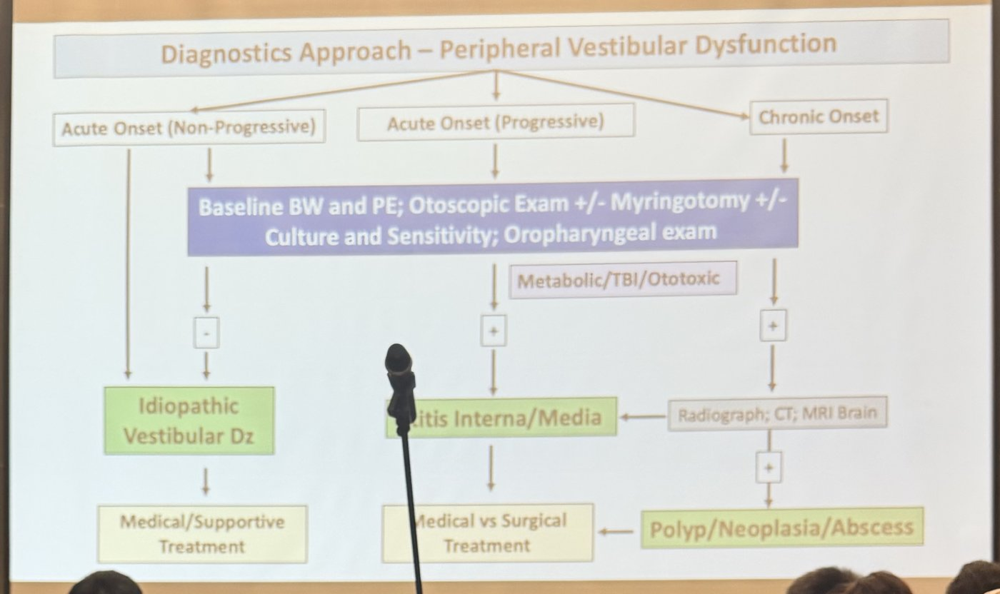
- 所有病例：基礎血液檢查、理學檢查、耳鏡檢查 ± 鼓膜切開 ± 培養與藥敏；口咽檢查。
- 依發病型態：
- 急性、不進展，檢查都正常 → 特發性前庭疾病 → 內科／支持療法。
- 急性、進展，檢查有異常 → 中耳／內耳炎（或代謝、創傷性腦傷、耳毒性）→ 內科 vs 手術。
- 慢性，檢查有異常 → X 光、CT、腦部 MRI → 中耳／內耳炎，或息肉／腫瘤／膿瘍 → 內科 vs 手術。
💡 和第 6 節中樞的流程對照：周邊從耳鏡＋口咽開始，中樞直接走 MRI＋CSF。但第 2 節提醒，周邊定位約 1/4 其實是中樞，進展或沒改善就要升級影像。
6. 中樞前庭疾病：診斷流程與病因
▾📸 現場 中樞前庭異常的診斷流程

| 發病型態 | 檢查 | 最可能 | 治療 |
|---|---|---|---|
| 急性、不進展 | 腦部 MRI ± CT；± CSF | 血管性、中毒 | 內科／支持療法 |
| 急性、進展 | 腦部 MRI ± CT ＋ CSF | 腦腫瘤 | 內科 vs 手術 vs 放射治療 |
| 慢性 | 腦部 MRI ± CT ＋ CSF | 發炎／感染 | 內科／支持療法 |
投影片上 CSF 的箭頭也指向血管性和腦腫瘤：CSF 對三類都有幫助（排除發炎）。
💡 這張圖的邏輯就是第 5 節的病程曲線：急性不進展像梗塞，持續進展像腫瘤。
- 🎤 中樞前庭疾病預後通常較差：腦幹有呼吸中樞，不管什麼病因，受損就麻煩。
- 影像：建議腦 MRI ± CT。如果做不了 MRI，飼主只想知道「有沒有一顆大腫瘤（如腦膜瘤）」，CT 完全合理，又快又便宜，只是細節不如 MRI。
- CSF 一定要做：即使 MRI 正常，有些發炎或感染只有 CSF 看得出來。
- 腫瘤可考慮手術或放射治療；血管性、中毒通常是急性不進展。發炎性講者沒細講，只提 MUE 是大宗，免疫抑制或抗生素的選擇決定預後，差異很大。
📸 現場 血管性：腦血管疾病（中風）
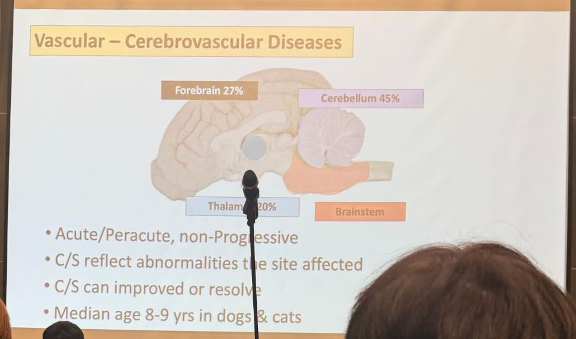
- 狗的梗塞位置：小腦 45%、前腦 27%、視丘 20%、腦幹（比例照片看不清）。
- 急性／超急性、不進展。
- 症狀反映受影響的部位。
- 症狀可以改善或消失。
- 犬貓中位年齡 8–9 歲。
💡 小腦是最常見的梗塞位置，所以老狗突然出現中樞前庭症狀、之後慢慢改善，要想到小腦梗塞，不只是特發性前庭疾病。
- 🎤 急性或超急性、不進展，病史通常很清楚；症狀依受影響部位而定，可以改善或消失。
- 小腦約佔 45%：急性小腦症狀，講者第一個想到血管性。
- 狗貓中位年齡 8–9 歲；缺血性比出血性常見，出血性只佔約 20% ❔（逐字稿語意不清）。
📸 現場 腦的血液供應
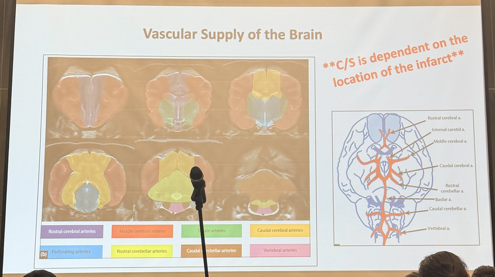
- 症狀取決於梗塞的位置（C/S is dependent on the location of the infarct）。
- 左圖各色代表：前大腦動脈、中大腦動脈、紋狀體動脈、後大腦動脈、穿通動脈、前小腦動脈、後小腦動脈、椎動脈的供應區。
- 右圖：前大腦、內頸、中大腦、後大腦、前小腦、基底、後小腦、椎動脈。
💡 呼應第 3 節 Villalonga 研究：小腦梗塞大多在前小腦動脈區。
📸 現場 腦血管疾病的病理生理
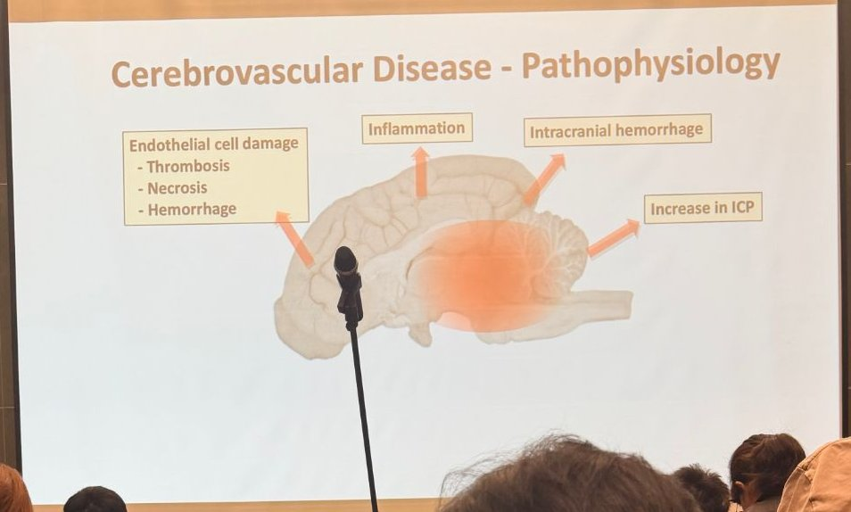
- 內皮細胞受損 → 血栓、壞死、出血。
- 發炎。
- 顱內出血。
- 顱內壓上升。
- 🎤 即使缺血性中風本身不大，續發的發炎、出血、顱內壓上升才是造成嚴重症狀的原因；缺血半影區的組織有機會救回來，但需要時間。
📸 現場 腦血管疾病的病因：「看到的只是冰山一角」
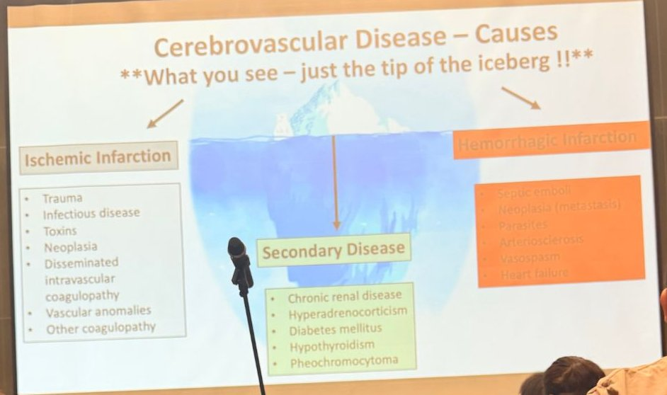
缺血性梗塞（投影片列）
- 外傷
- 感染
- 毒素
- 腫瘤
- 瀰漫性血管內凝血（DIC）
- 血管異常
- 其他凝血病變
出血性梗塞（投影片列）
- 敗血性栓子
- 腫瘤（轉移）
- 寄生蟲
- 動脈硬化
- 血管痙攣
- 心衰竭
潛在疾病（水面下）
- 慢性腎病
- 腎上腺皮質功能亢進
- 糖尿病
- 甲狀腺功能低下
- 嗜鉻細胞瘤
- 🎤 講者的病例：小腦有一個「很漂亮」的中風，本來以為沒什麼，做了腹部超音波才發現到處都是癌轉移（carcinomatosis），讓她很震驚：中風常只是冰山一角。
- 要找：腫瘤（超音波、CT）、敗血性栓子，以及慢性腎病、庫欣、糖尿病、甲狀腺功能低下等。
- 講者很實際：預算有限又懷疑中風時，錢花在全身性檢查，比把動物放進磁振造影機更值得。
📸 現場 急性不進展腦病的診斷流程
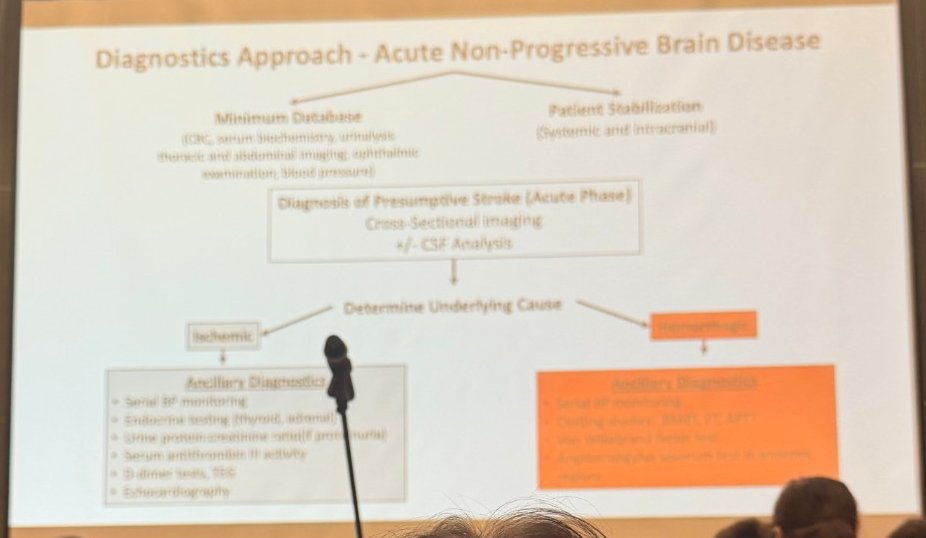
- 同時做：基本資料庫（CBC、生化、尿液、胸腹部影像、眼科檢查、血壓）＋穩定病患（全身與顱內）。
- 推定中風（急性期）：斷層影像 ± CSF。
- 找潛在病因，依類型做輔助檢查：
缺血性
- 連續監測血壓
- 內分泌檢查（甲狀腺、腎上腺）
- UPC（有蛋白尿時）
- 血清抗凝血酶 III 活性
- D-dimer、TEG
- 心臟超音波
出血性
- 連續監測血壓
- 凝血檢查（BMBT、PT、aPTT）
- von Willebrand 因子
- 流行地區驗 Angiostrongylus vasorum
這張照片較模糊，部分項目依常見做法辨識。
- 🎤 先穩定、做最基本資料；CSF 可考慮，但重點是找潛在原因。
- 最少要量血壓＋尿檢（必要時 UPC）：蛋白流失性腎病可能是最常見、也容易治療的原因。可以的話再做甲狀腺／內分泌檢查；更進一步有 D-dimer、心臟超音波、vWF、凝血檢查等。
📸 現場 影像：MRI 是診斷標準
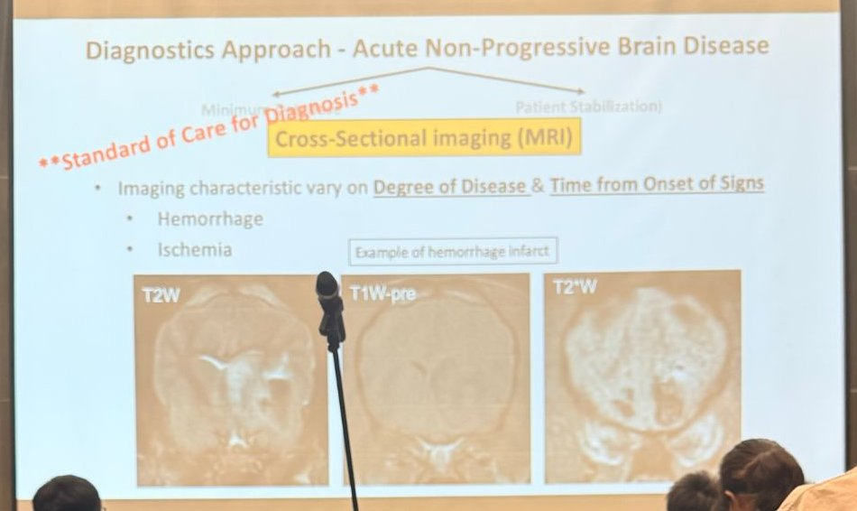
- 斷層影像（MRI）是診斷標準。
- 影像表現會隨病灶程度和距發病的時間改變：出血、缺血。
💡 T2*（梯度回波）對出血最敏感，出血處呈低訊號；CT 在急性期常看不到缺血性梗塞，所以懷疑中風首選 MRI。
- 🎤 MRI 可以依血液降解的變化推估中風發生多久；缺血性中風常呈楔形。進一步還能依受影響腦區推回是哪一條動脈（講者常拿來考住院醫師）。
📸 現場 發炎性疾病（Inflammatory Disease）

- 感染性 vs 非感染性（免疫媒介）。
- 治療：抗生素 vs 免疫抑制。
- 預後：依病因而定，通常不太好。
💡 非感染性就是 MUO（原因不明的腦膜腦炎，包括 GME、NME 等），確診前要先排除感染，才能放心用免疫抑制。
📸 現場 硫胺素（維生素 B1）缺乏

- 中樞前庭症狀與癲癇。
- 頸部腹屈（neck ventroflexion）。
- 侵犯特定神經核：前庭核、丘（colliculi）、膝狀體（geniculate）。
- 飲食史是關鍵！
- 貓吃生魚（含硫胺素酶）。
- 食物過度加熱，或用亞硫酸鹽防腐劑。
- 治療：均衡飲食、補充硫胺素。
💡 MRI 的對稱性病灶是特徵。懷疑時先打硫胺素，不用等確診：便宜、安全，反應快也幫助診斷。
- 🎤 講者在台大念碩士時，一位住院醫師的病例：頸部腹屈，特定神經核兩側對稱的病灶。神經科很少看到兩側對稱，一看到就先想代謝性。
- 飲食史是關鍵：講者的導師一定把「壽司」放進投影片（生魚含硫胺素酶），或商業飼料品質不佳。治療其實不難：均衡飲食＋維生素補充。
🎤 錄音 Metronidazole 中毒
- 🎤 講者常常忘記想到它。原本以為要很高的劑量才會神經毒，但文獻中發生中毒的劑量範圍其實不高（約 13–56 mg/kg ❔，逐字稿單位寫 mcg），講者以前常用 10–15 mg/kg，現在盡量用 <10 mg/kg。
- 中樞定位的病例一定要問、要翻病歷：「有沒有在吃 metronidazole？」
- 機轉推測和 GABA 受體有關，影響特定神經核；MRI 可見兩側對稱的神經核變化。
- 治療：停藥（可給 diazepam 加速恢復；逐字稿聽成 aspirin ❔），通常恢復得不錯。
📸 現場 病例 Toby：2 歲貓，急性多發顱內症狀
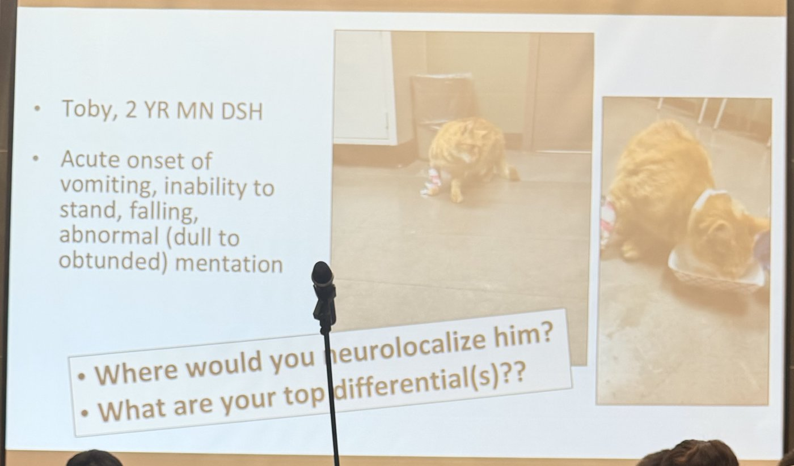
- 2 歲已去勢公貓（DSH）。急性嘔吐、站不起來、跌倒、意識變差（沉鬱到遲鈍）。
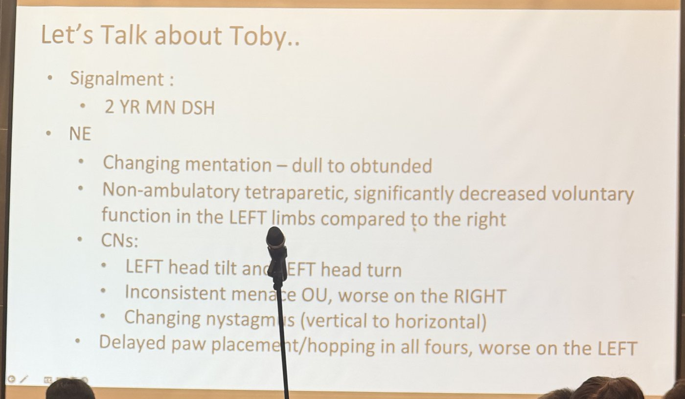
- 意識變動：沉鬱到遲鈍。
- 無法行走的四肢輕癱，左側肢體自主運動明顯比右側差。
- 腦神經：頭向左傾斜、頭向左轉；雙眼威嚇反應不一致，右側較差；眼球震顫會改變（垂直轉水平）。
- 四肢本體位置感覺／跳躍反應延遲，左側較差。
💡 意識改變＋頭轉向＋威嚇異常（前腦），加上頭傾斜和會變方向的垂直眼球震顫（中樞前庭）→ 多發顱內病灶。講者的定位投影片沒拍到。
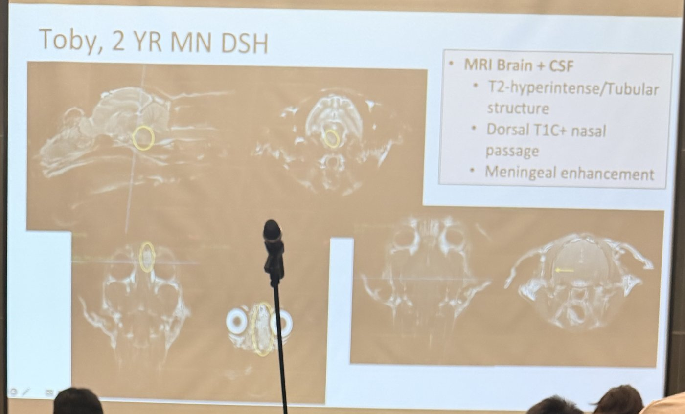
- MRI：T2 高訊號的管狀構造；鼻腔背側 T1 顯影；腦膜顯影。
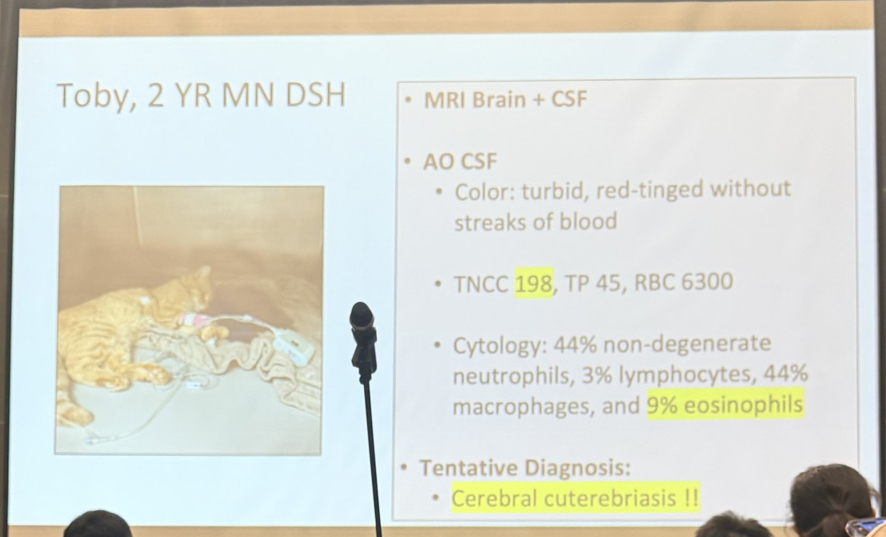
- 寰枕穿刺 CSF：混濁、帶紅色但沒有血絲。
- TNCC 198、TP 45、RBC 6300。
- 細胞學：非退行性嗜中性球 44%、淋巴球 3%、巨噬細胞 44%、嗜酸性球 9%。
💡 線索串起來：鼻腔背側的顯影＝幼蟲進入的路徑，管狀病灶＝移行的軌跡，CSF 嗜酸性球＝寄生蟲。這是北美戶外貓夏秋季的疾病，台灣少見，但 CSF 出現嗜酸性球時要想到寄生蟲移行。
- 🎤 講者的描述：2 歲 DSH，跌倒、嘔吐、沉鬱；向左傾倒，完全站不起來，但食慾很好；左側頭傾斜、頭向左轉，跳躍反應延遲以左側最嚴重（四肢都有），可能有一點意向性震顫和軀幹搖擺。
- 急性發病又是年輕貓 → 最懷疑血管性、中毒或發炎／感染。
- MRI：中腦到腦幹有線狀、管狀的 T2 高訊號，頭尾方向延伸；右側鼻腔也有變化，並有腦膜顯影。發病在春末夏初天氣變暖的時候。
- CSF：有核細胞 198，嗜酸性球 9%，很少見 → 鼻腔＋線狀移行路徑＋嗜酸性球 → 暫定診斷 Cuterebra（馬蠅幼蟲）移行。講者搬到美國東北部之前從沒看過。沒有病理解剖，是綜合判斷。
- 治療：diphenhydramine＋ivermectin，幾個月內明顯改善，預後其實不差。
📸 現場 病例 Leo：走失 7 週的貓
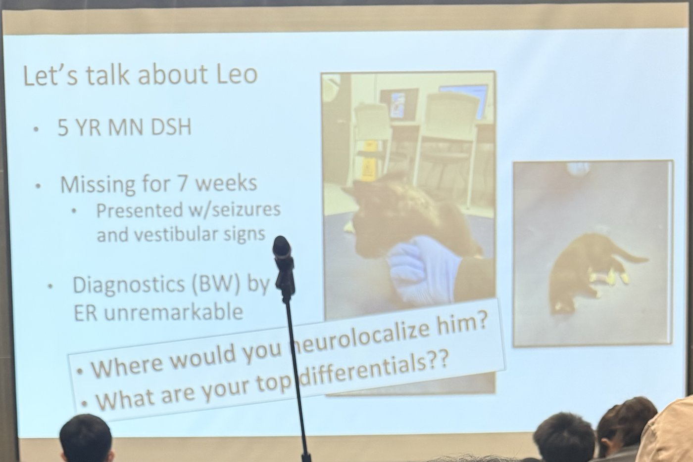
- 5 歲已去勢公貓（DSH），走失 7 週，回來時有癲癇和前庭症狀。
- 急診血液檢查無異常。
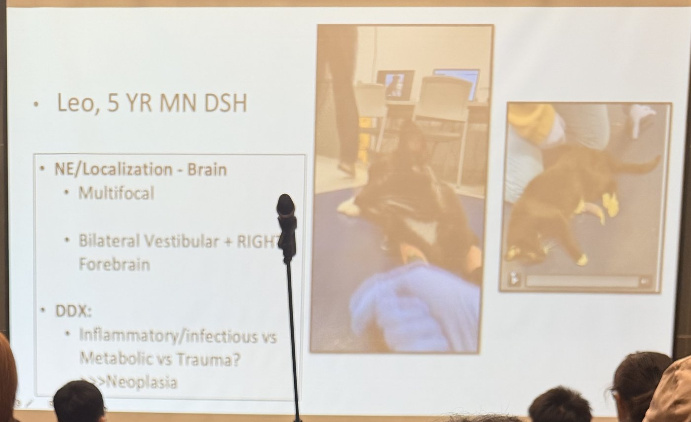
- 神經學定位：腦，多發：雙側前庭＋右側前腦。
- 鑑別診斷：發炎／感染 vs 代謝 vs 外傷？>>> 腫瘤。
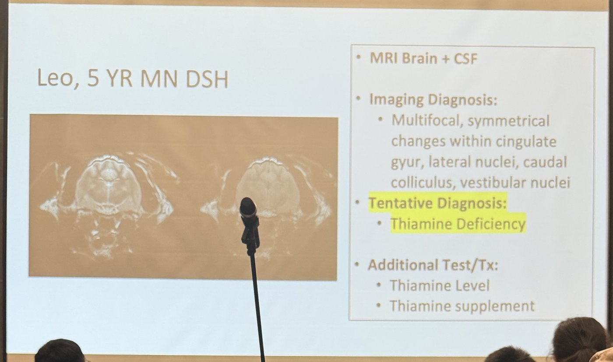
- MRI：多發、對稱的病灶，位於扣帶迴、外側（膝狀）核、後丘、前庭核。
- 暫定診斷：硫胺素缺乏。
- 追加：驗硫胺素濃度、補充硫胺素。
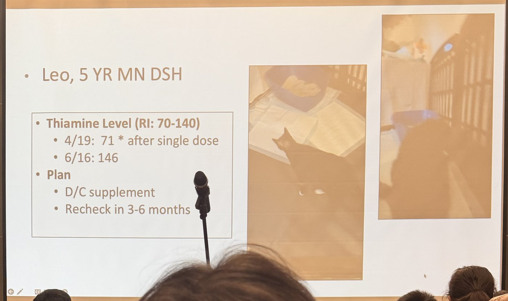
| 日期 | 硫胺素（參考值 70–140） |
|---|---|
| 4/19 | 71（已打過一劑之後才採樣） |
| 6/16 | 146 |
- 計畫：停止補充，3–6 個月後複查。
💡 呼應上面的硫胺素缺乏投影片：病灶位置（前庭核、丘、膝狀體）完全吻合，且對稱。走失 7 週＝飲食史異常。第一次濃度是補充一劑後才驗，已經在參考值下緣，真正的治療前數值應更低：懷疑時先抽血留樣，再立刻補充。
- 🎤 講者的描述：年輕貓，走失 7 週後回來，有抽搐；兩側前庭症狀、又向右轉 → 多發定位，懷疑發炎／感染。
- MRI 意外看到兩側對稱、多發的病灶（小腦小結、外側膝狀核、尾側丘、基底核等），典型的疑似硫胺素缺乏。
- 驗了硫胺素，但抽血前已經給過一劑；即使如此仍在參考值低端（約 71 ❔）。補充後明顯改善，基本上恢復正常，考慮再追蹤一次濃度。
7. Horner 路徑（Horner's Pathway）
▾📸 現場 眼睛的交感神經路徑

路徑（從腦到眼）
| 段 | 投影片上的結構 | 說明 |
|---|---|---|
| 第一段（中樞，UMN） | 下視丘（hypothalamus）→ 中腦頂蓋（tectum, midbrain）→ 外側頂蓋被蓋脊髓徑（lateral tectotegmental spinal tract） | 沿腦幹、頸髓往下 |
| 第二段（節前） | 節前神經元：T1–T3 的外側灰柱＝中間外側核（intermediolateral nucleus）→ 經頸胸神經節（cervicothoracic ganglion）、中頸神經節（mid-cervical ganglion）→ 迷走交感幹（vagosympathetic trunk） | 穿過兩個神經節但不在那裡換神經元；沿頸部和迷走神經同行 |
| 第三段（節後） | 前頸神經節（cranial cervical ganglion）→ 節後神經元經鼓室泡（tympanic bulla）旁 → 眼眶 | 與內頸動脈同行，經過中耳 |
| 作用器官 | 眼眶肌（orbitalis）、睫狀肌（ciliaris）、虹膜擴大肌（dilator of iris） | 瞳孔放大、眼球前推、眼瞼張開 |
Horner 症候群
- 瞳孔縮小（miosis）、眼瞼下垂（ptosis）、眼球內陷（enophthalmos）、第三眼瞼突出（prolapsed nictitans）。
💡 定位的線索：
- 中樞（第一段）：同時有腦幹或頸髓症狀（意識改變、輕癱、本體感覺缺損）。
- 節前（第二段）：T1–T3 脊髓或神經根病灶（同時有前肢 LMN 症狀、同側皮膚軀幹肌反射消失）、臂神經叢撕脫、前縱膈或頸部腫塊、頸部外傷（如勒頸、頸靜脈採血）。
- 節後（第三段）：中耳炎、耳道沖洗後、眼眶後病灶。
- 藥物試驗：稀釋 phenylephrine 點眼，節後病灶因去神經過敏而在約 20 分鐘內瞳孔放大，節前或中樞則較慢或不放大。
- 🎤 為什麼前庭的演講要講 Horner？因為交感路徑很長，其中一段經過鼓室泡旁邊：「鄰居家著火，你家也很容易著火。」
- 路徑：下視丘／中腦被蓋 → 被蓋脊髓徑下行 → T1–T3 節前神經元 → 頸胸神經節、中頸神經節 → 迷走交感幹 → 前頸神經節突觸 → 經中耳 → 眼眶肌、睫狀肌、虹膜擴張肌。
- 任何一段出問題（脊髓、迷走交感幹、鼓室泡）都會有：瞳孔縮小、眼瞼下垂、眼球內陷、第三眼瞼突出。
- 前庭症狀合併 Horner，大多是周邊（中耳），因為鼓室泡就在那裡。
8. 定位速查表
▾💡 整理者依本場投影片整理：
| 看到的組合 | 定位 |
|---|---|
| 頭傾斜＋眼球震顫，本體感覺、肌力、意識都正常 | 周邊前庭（頭歪的那側） |
| 同上＋同側 Horner（±CN VII 麻痺） | 周邊前庭，中耳／內耳（同側） |
| 頭傾斜＋同側本體感覺缺損或輕癱、沉鬱 | 中樞前庭（腦幹前庭核，頭歪的那側） |
| 頭傾斜＋對側本體感覺缺損、步幅過大、意向性震顫 | 矛盾性前庭：病灶在本體感覺缺損那側的小葉小結葉／後小腦腳 |
| 垂直眼球震顫、眼球震顫方向隨頭位改變 | 中樞 |
| 無法行走；休息時眼球震顫慢或沒有 | 偏向中樞（Troxel 2005） |
| 遮眼＋筆燈後眼球震顫變快、變明顯 | 支持周邊（沒變化不能排除周邊） |
| 前庭症狀持續惡化 | 中樞、腫瘤優先（如病例 Jack） |
| 同側前庭＋CN VII＋Horner | 同側中耳／內耳（如法鬥病例） |
| 老年、急性、沒有 Horner、很快改善 | 特發性前庭疾病 |
| 老年、急性不進展、有中樞徵象 | 中風（小腦最常見）→ MRI、血壓、找潛在疾病 |
| 貓吃生魚（或走失、營養不良）、頸部腹屈、MRI 對稱病灶 | 硫胺素缺乏（如病例 Leo） |
| 年輕戶外貓、多發顱內症狀、MRI 管狀病灶、CSF 嗜酸性球 | 寄生蟲移行（如 Toby 的馬蠅蛆症） |
9. Take-home message
▾- 🎤 講者最後的重點：看基本資料、問病史、親手做檢查，分出中樞 vs 周邊。
- 周邊多是耳朵疾病，但耳鏡正常也不代表沒事：依品種與症狀，可能漏掉中樞延伸。
- 中樞定位如果可以，做進階影像＋CSF；周邊疾病多數預後好，原發中樞疾病通常保留。
- 我們能做的就是有根據的猜測：依鑑別診斷、飼主預算和手邊的檢查，幫飼主選最適合的路。
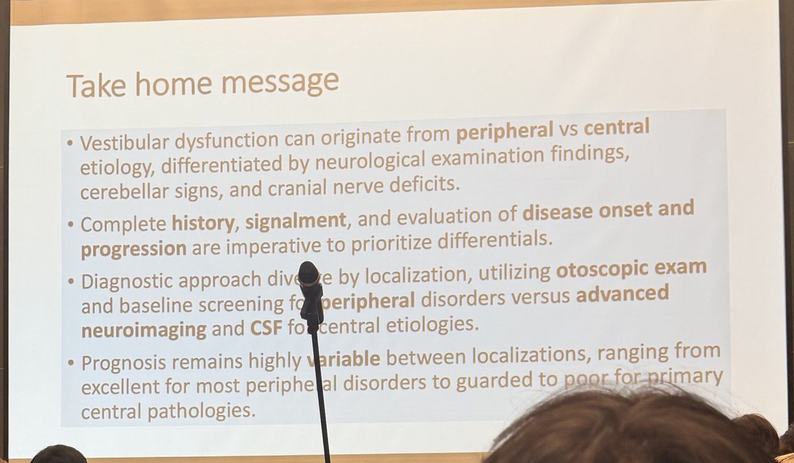
- 前庭異常可能來自周邊或中樞，靠神經學檢查、小腦徵象和腦神經缺損區分。
- 完整的病史、基本資料，以及發病與進展的評估，是排出鑑別診斷優先順序的關鍵。
- 診斷方向依定位而不同：周邊用耳鏡檢查和基礎篩檢，中樞用進階神經影像和 CSF。
- 預後差異很大：多數周邊疾病極佳，原發中樞疾病則保留到差。